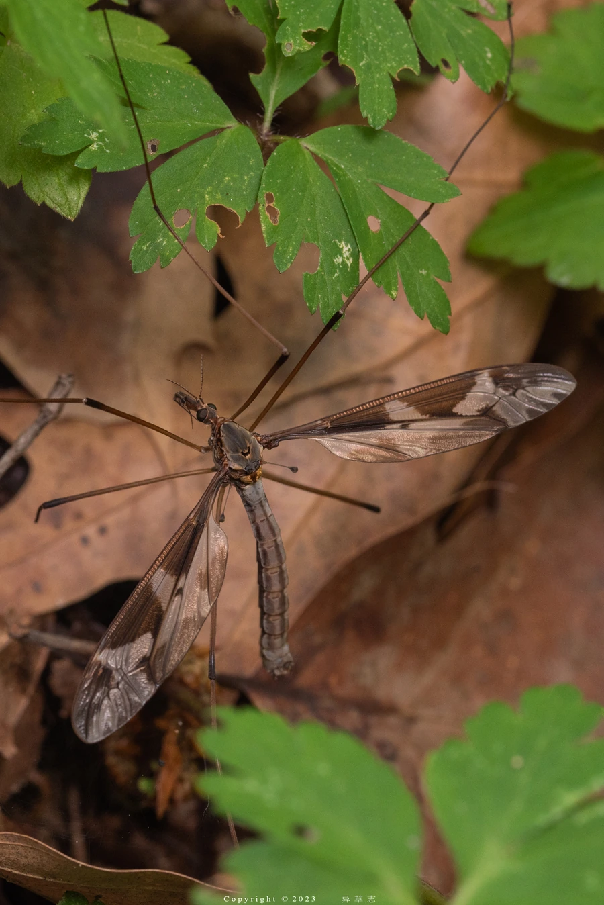

昆虫 · 动物界
大蚊 Tipula maxima

腿极长、体型像巨型蚊子的昆虫，成虫不吸血，常在草丛和水边活动，幼虫生活在潮湿土壤和腐殖质中。
- 分类
- 门节肢动物门纲昆虫纲目双翅目科大蚊科属大蚊属
- 栖息环境
- 草丛、林缘、湿地、水边与花园，幼虫在潮湿土壤中
- 地理分布
- 欧洲和亚洲的温带地区，中国北方常见
- 保护级别
- 暂无评估；对人无害
物种志
大蚊成虫体长约 2–3 cm，腿极长，展开时可达 10 cm 以上，外形像一只巨大的蚊子，但身体细弱，翅透明，停歇时双翅平展或呈八字形。它的口器退化，不能吸血，与真正的蚊子不同。
大蚊生活在草丛、林缘、湿地、水边和花园，成虫寿命很短，多数不取食或只吸食少量水分和花蜜，主要任务是交配产卵。幼虫生活在潮湿的土壤、腐殖质、落叶层和水边泥中，取食腐烂植物和有机碎屑，是分解者之一。大蚊广布欧洲和亚洲，常见于雨后和潮湿环境，因体型大、腿长而常被误认为巨型蚊子，实际上对人无害，不需要防治。
形态与习性
- 食性成虫多不取食；幼虫取食腐烂植物和有机碎屑
- 体长约 2–3 cm，腿展可超过 10 cm
- 识别腿极长，外形像巨型蚊子，口器退化
- 生活史幼虫生活在潮湿土壤和腐殖质中
- 分布欧洲和亚洲温带地区
趣味知识
- 大蚊虽然长得像大蚊子，但口器退化，完全不吸血。
- 它的腿又细又长，展开能有 10 厘米以上。
- 大蚊对人无害，看到它不用害怕，也不需要拍打。